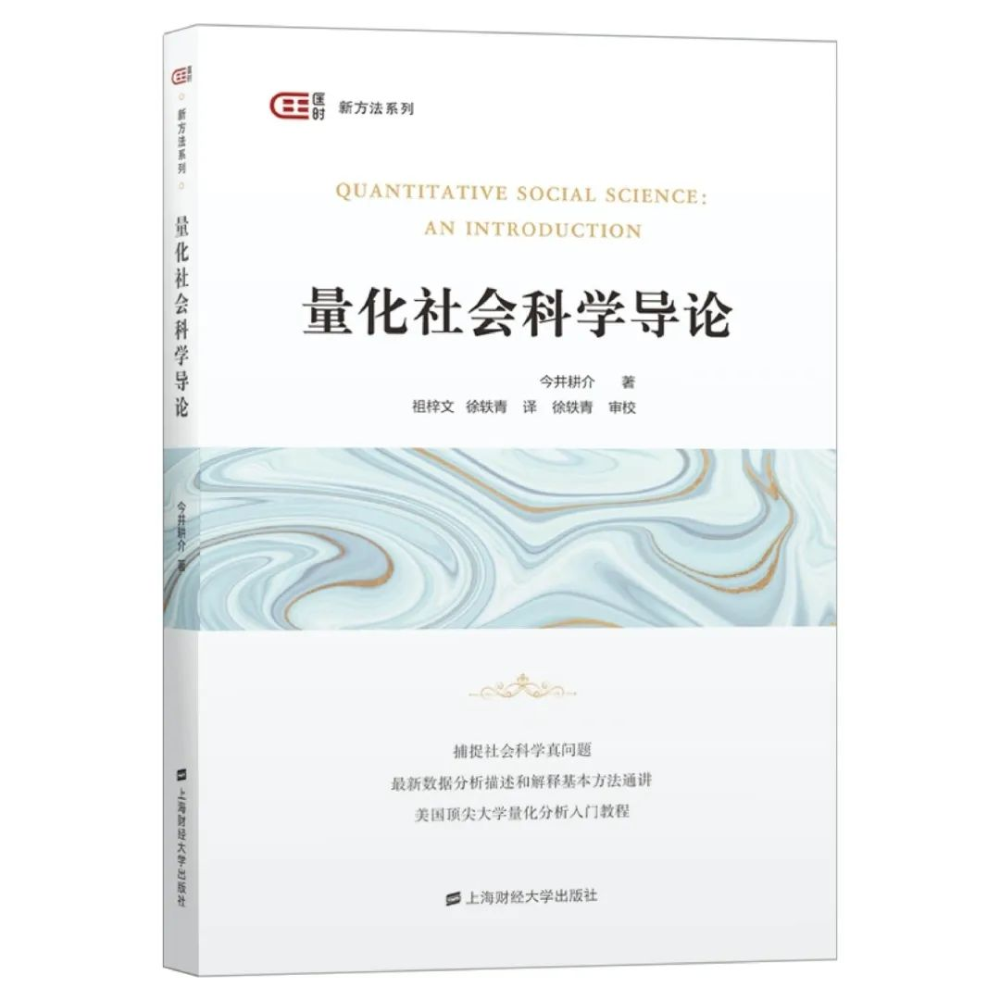

政观赠书|今井耕介著、祖梓文、徐轶青译：《量化社会科学导论》
收录于合集
作者简介： 今井耕介（Kosuke Imai），哈佛大学政府系和统计系教授。今井教授曾在普林斯顿大学执教15年，并担任统计和机器学习项目主任，直到2018年加入哈佛大学。他深耕于开发以及运用统计方法、通过实验和观测数据进行因果推断。他在政治方法论方面的其他研究领域包括调查方法和大数据社会科学研究中的算法。今井教授在2017年到2019年担任美国政治学方法论学会主席。
上图为本书作者今井耕介
译者简介： 祖梓文，加州大学圣迭戈分校政治学系博士生，政文观止Poliview特邀作者；徐轶青，斯坦福大学政治学系助理教授。
上图左起依次为本书译者祖梓文、徐轶青

赠书简介
《量化社会科学导论》是上海财经大学即将出版的匡时新方法系列中的最新一本方法专著。量化分析方法在社会科学研究中日益重要，但是社会科学以及相关领域的学生往往缺乏训练。即便有训练，他们接触到的也可能是对社学科学研究本身提供不了太多启发的纯统计课程。该书专门为社会科学如政治学、经济学、社会学、公共政策和数据科学专业的本科生以及低年级研究生量身定制，提供了关于数据分析和统计的实用入门方法。
当下全世界在经济、政治、教育和公共卫生等各方面都面临着严峻挑战，而COVID-19的全球大流行危机更是凸显找寻以数据为导向的新的、有效的政策举措的紧迫性。该书中文版的出版也旨在吸引越来越多的年轻学生和研究者进入日新月异的量化社会科学领域。
《量化社会科学导论》一书的写作源于今井教授在普林斯顿大学教授长达十余年之久的一门本科课程。该书英文版自2017年出版后，已经成为世界多所大学用来教授统计和数据科学课程的重要教材。在美国，包括斯坦福大学、耶鲁大学以及作者目前任教的哈佛大学在内的顶尖高校都在使用该书。《量化社会科学导论》的核心思想是学生需要在课程中尽早地接触真实的量化社会科学研究。与传统的统计入门教材不同，该书从一开始就直接采用已经发表的量化社会科学研究中的数据 。该书在介绍概率和统计理论之前为读者提供了深入的数据分析体验，等到读者往后读到难度进阶的章节，就会理解为什么需要这些理论来理解和开展量化社会研究。
《量化社会科学导论》开篇以种族歧视和呼吁投票运动为例，从实验和观察性研究两个角度讨论了因果性；接着讲解了度量和预测这两个社会科学研究数据分析中的主要目标。该书还有一章讲述了对文本、网络和空间数据的分析，这为读者提供了当今量化社会科学研究的概览。概率和统计理论则在这些数据分析的章节之后呈现。《量化社会科学导论》一书所需的数学要求并不高，读者不一定需要掌握微积分和线性代数的知识。该书在介绍概率和统计理论时采用了一种缜密的概念方式 ，以便学生可以理解其背后的逻辑 。
目录
Quantitative Social Science
中文版序言
英文版序言
译校者序
一、引言
1.1 本书概述
1.2 如何使用本书
1.3 R的简介
1.4 总结
1.5 练习
二、因果关系
2.1 劳工市场的种族歧视
2.2 用R取得的数据子集
2.3 因果效应与反事实
2.4 随机对照试验
2.5 观察性研究
2.6 单变量的描述性统计量
2.7 总结
2.8 习题
三、度量
3.1 战争时期平民受伤情况的度量
3.2 处理R中缺失的数据
3.3 可视化单变量分布
3.4 调查抽样
3.5 度量政治极化
3.6 概括双变量关系
3.7 聚类
3.8 总结
3.9 练习
四、预测
4.1 预测选举结果
4.2 线性回归
4.3 回归与因果关系
4.4 总结
4.5 练习
五、数据探索
5.1 文本数据
5.2 网络数据
5.3 空间数据
5.4 总结
5.5 练习
六、概率
6.1 概率
6.2 条件概率
6.3 随机变量和概率分布
6.4 大样本定理
6.5 总结
6.6 练习
七、不确定性
7.1 估计
7.2 假设检验
7.3 含不确定性的线性回归模型
7.4 总结
7.5 练习
下一步
词汇表
划重点：赠书
北京时间11月6日23:59 之前留言您对今井耕介及其研究领域或者其他著作、政文观止Poliview或者政治学（包括国际/比较政治经济学）的想法或者建议 （不少于100字） ，我们将本着 公平公正 的原则抽出 四 位幸运读者寄送赠书 （限中国大陆地区） 。我们真挚地希望被抽中的幸运读者能在读完这本书后写下书评发给我们，共同交流，汇总成文。
没有抽中的读者朋友也请勿伤心抑或担心，本书在淘宝等各大平台均有销售。
政文观止Poliview今后还将继续举办赠书活动，欢迎继续关注、支持我们。
点击“阅读原文”可直达购书链接
编辑：康张城 杨端程